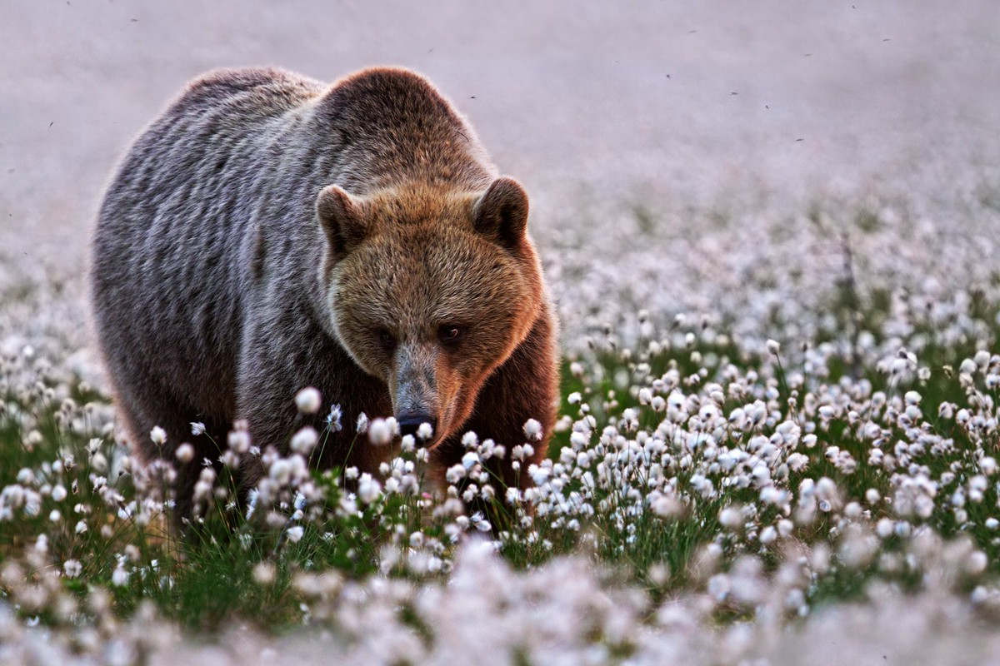
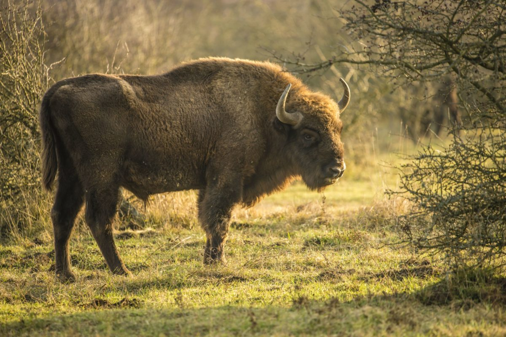
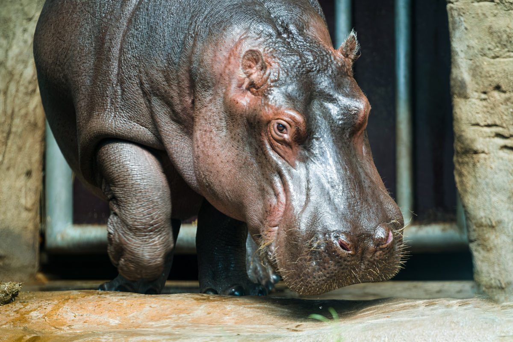

Galerie pro ukázku využití selektorů Class




Selektor mřížka "#" vybere identifikátor "id" z HTML dokumentu
Selektor mřížka "#" pro výběr elementu pomocí identifikátoru "id" lze uplatnit pod jedním specifickým názvem pro výběr pouze jediného konkrétního elementu v HTML dokumentu, kterému je přidělen a pomocí jazyka CSS mu tak specifikovat jeho vlastnosti.
Selektor tečka "." vybere třídu "class" z HTML dokumentu
Selektor tečka "." nám umožňuje vybrat třídu "class" která může být přidělena více elementům najednou a nastavit jim tak hromadně společné vlastnosti.
Ostatní selektory a pseudo classes selektory jsem popsal v odpovědích na teoretické otázky v souboru "readme.md" a také jsem pro účely tohoto testu vypsal většinu tich co jsem někdy využil zde
Mimo jiné sem přikládám své reálné ukázky práce: vlasovestudio-bonum.cz / solnajeskyne-pisek.cz